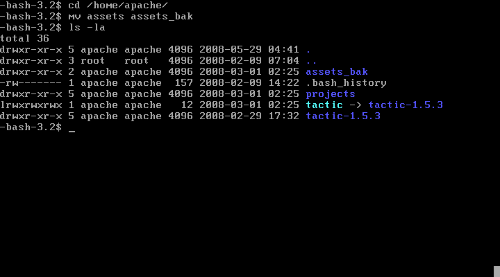

Relocating the assets directory
proper management of assets and asset metadata are essential to managing the TACTIC service. Versioned assets are by far the most disk space consuming element of asset management. TACTIC can store its asset data in any filesystem path location. All that is required is that the tactic configuration file contains the path to a directory writable by the TACTIC service user.
-
Local Access in a simple configuration, the TACTIC service is enabled on the TACTIC host, and all assets checked in and checked out of TACTIC are stored on the local filesystem. Typically a user is created to run the TACTIC service, or an already assigned user is simply used to run the TACTIC service.
-
Network Access in an addition to the simple configuration, the TACTIC service is enabled on the tactic host and all assets checked in and checked out tactic are stored on a network mount. Typically a user is created to run the TACTIC service and be able to write to the network mount.
-
*TACTIC user permissions*It is important to note that in a network accessible filesystem, allocation of permissions are important only for the TACTIC user. Regular system users should not have access to the TACTIC assets directory.
-
Browsable access to assets During some conversions to the management of assets by TACTIC, a frequent request is for regular user access to the assets directory managed by TACTIC. There really is not the much to see in these directories as tactics naming convention for versioning of assets creates files and directories that are largely mysterious in their arrangement.
Is very important that the files that are managed by tactic are not touched by regular users. Manipulating files or directories managed by tactic will definitely result in data loss. Regular users should not have writable access to tactic asset directories.
Before you begin this process, you should first move or copy your assets to their new location using a network share ideally named assets. For a new installation, you should create an assets share or directory in your new location.
In most cases, it is ideal to relocate the assets directory to a
dedicated file server. If you already have an assets directory, you can
rename it to "assets_temp" to break the current connection. You will
know the connection is broken when your asset and project thumbnails are
no longer visible in the user interface. Once the assets are
successfully moved to the new location you will know they are accessible
when the assets and thumbnails are visible again.
In Linux, the steps to rename the current assets will be similar to the example below:
\1) Navigate to the apache directory cd /home/apache
\2) In the shell run mv assets assets_bak
\3) If you run ls -la, you should get a listing confirming the change

\4) To confirm the operation was successful, log in to TACTIC and you should find that none of the thumbnails or assets are available.
The config file is named differently on each operating system:
| Filename | Operating System | Location |
|---|---|---|
tactic_win32-conf.xml |
Windows |
TACTIC_INSTALL_DIR/projects/config |
tactic_linux-conf.xml |
Linux |
TACTIC_INSTALL_DIR/projects/config |
Updating the tactic_linux-conf.xml file (Linux)
In the <checkin/> tag in the tactic_linux-conf.xml config file, the
asset_base_dir location defines where assets are stored by TACTIC.
This location could be on the TACTIC server (the default is
/home/apache/assets), or preferably on a network shared drive.
This path is defined from the perspective of the TACTIC server. An example of this entry where it looks to a share on another server would be:
asset_base_dir="/home/apache/assets"This location on the server would be mounted to the central assets server which in this case would be:
//192.168.0.105/assetsThis share would have to allow the apache user (which is TACTIC) to read and write to it.
There are also two variables that need to be set in the following Apache config file:
/etc/httpd/conf.d/tactic.conf
Change this:
<Directory "/home/apache/assets" >
Options FollowSymLinks
AllowOverride None
Order Allow,Deny
Allow from All
</Directory>To:
<Directory "/mnt/d1/tactic/assets" >
Options FollowSymLinks
AllowOverride None
Order Allow,Deny
Allow from All
</Directory>You will also need to change the assets alias further down in the config file:
Change this:
Alias /assets "/home/apache/assets"To:
Alias /assets ""For the win32_client_repo_dir location, it should include the
asset_base_dir path as seen by the client machine. For example,
suppose the asset_base_dir path is "/home/apache/assets" on a Linux
box. However, from a Windows client, it is mapped as:
"Z:/assets" or "//192.168.0.105/assets"
The win32_client_repo_dir location would then be:
win32_client_repo_dir="//192.168.0.105/assets"
The linux_client_repo_dir location is analogous to win32_client_repo_dir, except it is meant for a Linux client.
Updating the tactic_win32-conf.xml file (Windows)
In the <checkin/> tag in the tactic_linux-conf.xml config file, the
asset_base_dir location defines where assets are stored by TACTIC.
This location could be on the TACTIC server (the default is
/home/apache/assets), or preferably on a network shared drive.
This path is defined from the perspective of the TACTIC server. An example of this entry where it looks to a share on another server would be:
asset_base_dir="/home/apache/assets"This location on the server would be mounted to the central assets server which in this case would be:
//192.168.0.105/assetsThis share would have to allow the apache user (which is TACTIC) to read and write to it.
There are also two variables that need to be set in the following Apache config file:
/etc/httpd/conf.d/tactic.conf
Change this:
<Directory "/home/apache/assets" >
Options FollowSymLinks
AllowOverride None
Order Allow,Deny
Allow from All
</Directory>To:
<Directory "/mnt/d1/tactic/assets" >
Options FollowSymLinks
AllowOverride None
Order Allow,Deny
Allow from All
</Directory>You will also need to change the assets alias further down in the config file:
Change this:
Alias /assets "/home/apache/assets"To:
Alias /assets ""For the win32_client_repo_dir location, it should include the
asset_base_dir path as seen by the client machine. For example,
suppose the asset_base_dir path is "/home/apache/assets" on a Linux
box. However, from a Windows client, it is mapped as:
"Z:/assets" or "//192.168.0.105/assets"
The win32_client_repo_dir location would then be:
win32_client_repo_dir="//192.168.0.105/assets"
The linux_client_repo_dir location is analogous to win32_client_repo_dir, except it is meant for a Linux client.